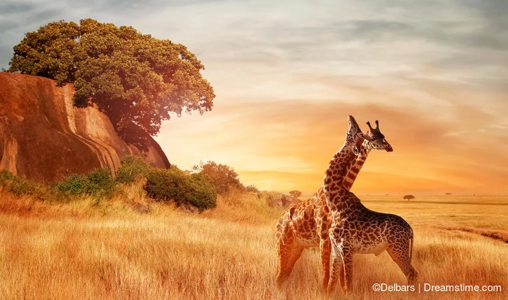

The People The Land Language Weather Culture
Posted by John Doe on Saturday, October 5, 2024

Giraffes at Kenya. Source: Jane Doe of The Guardian News
The African continent is home to a rich and diverse array of cultures, languages, and traditions. Africa, with its 54 nations, has over 1.4 billion people, making it one of the most populous continents in the world. African people have made significant contributions to global culture, science, politics, and art throughout history.
Africa is incredibly diverse, with over 3,000 distinct ethnic groups and more than 2,000 languages spoken. Some of the most well-known groups include the Zulu, Maasai, Yoruba, Hausa, Igbo and Berber, each with its unique traditions, belief systems, and societal structures. African music, dance, and storytelling are central to its cultures, with oral traditions being a primary means of passing down history and wisdom across generations.
African civilizations have a long and influential history, from the powerful empires of Egypt, Mali, and Great Zimbabwe to the sophisticated trade routes across the Sahara. The continent is the birthplace of humanity, as the earliest human fossils have been found in East Africa. Over centuries, Africa faced colonization and the transatlantic slave trade, but it has also been a place of immense resistance, resilience, and liberation struggles.
Africa's top 5 countries by population[1] are:
Africa is a linguistically diverse continent with over 2,000 languages spoken. However, there are several widely spoken languages, both indigenous and colonial, that are common across various regions. Here are some of the most common languages spoken by African people:
African people have had a profound impact on global culture, particularly in music, dance, and art. African rhythms have influenced everything from jazz and blues to hip-hop and electronic music. African visual art, both traditional and contemporary, is admired worldwide, with artists like El Anatsui and Yinka Shonibare gaining international recognition. African fashion, too, is making waves globally, blending traditional designs with modern influences.
Today, African countries are rapidly modernizing while also preserving their cultural heritage. Africa’s people are at the forefront of technological innovation, agriculture, and entrepreneurship. Cities like Lagos, Nairobi, and Johannesburg are becoming important hubs for technology and culture. The continent also has a young population, with a median age of around 19, which makes it a key region for future global growth and development.
African people have faced significant challenges, including poverty, political instability, and the effects of colonialism. Yet, African societies have shown incredible resilience and innovation in overcoming these challenges. Movements advocating for human rights, environmental sustainability, and economic empowerment continue to grow across the continent.
Related posts
 The Languages of the African People
The Languages of the African People
By James Gichinga
 Why Africa is a Rich Continent
Why Africa is a Rich Continent
By Emeka Ofodu
 Africans outside of the African continent?
Africans outside of the African continent?
By Phillipe Armstrong